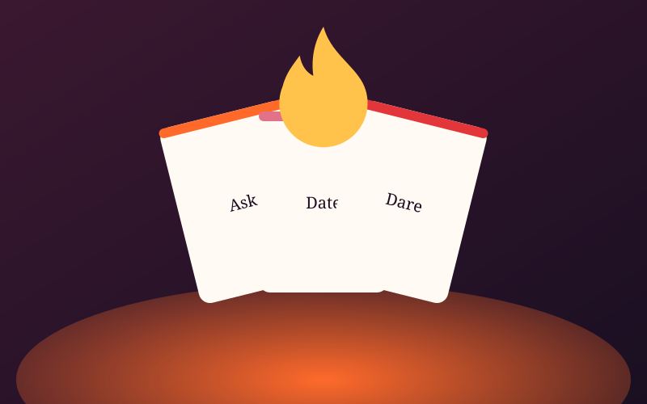
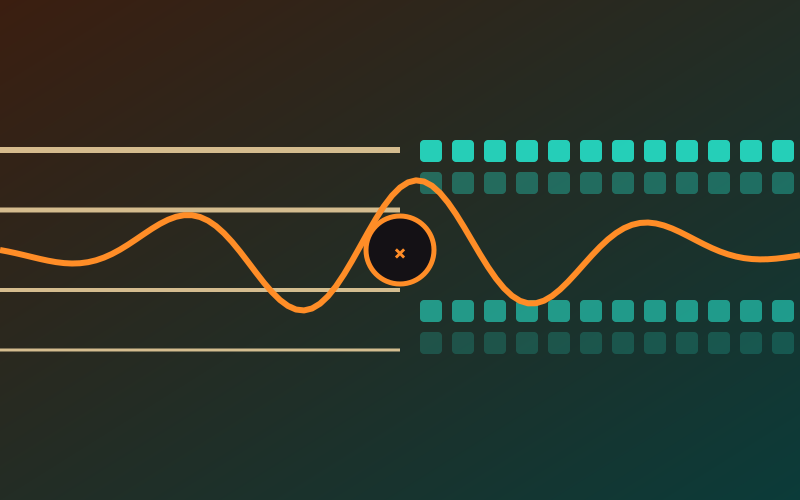
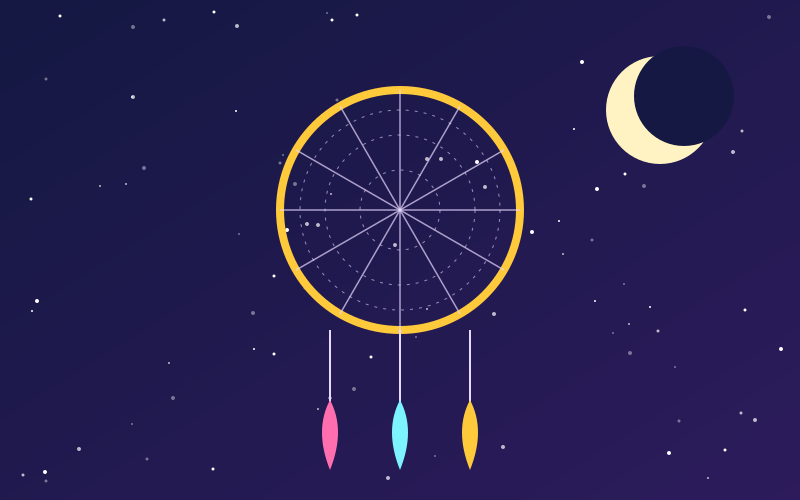
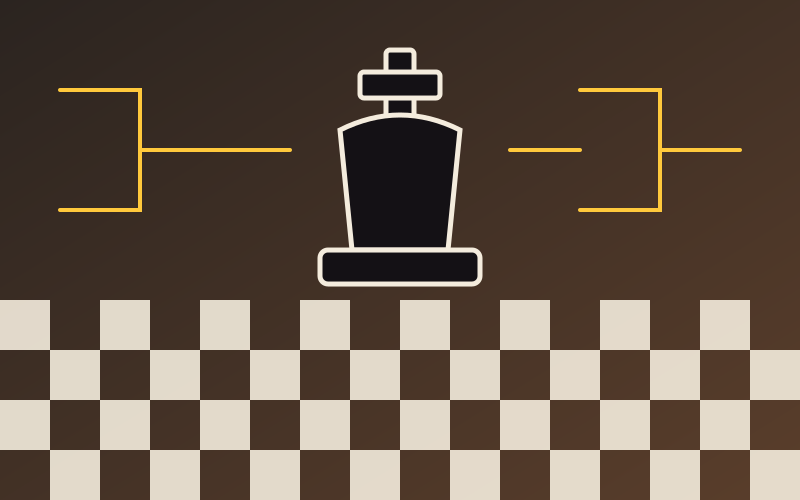
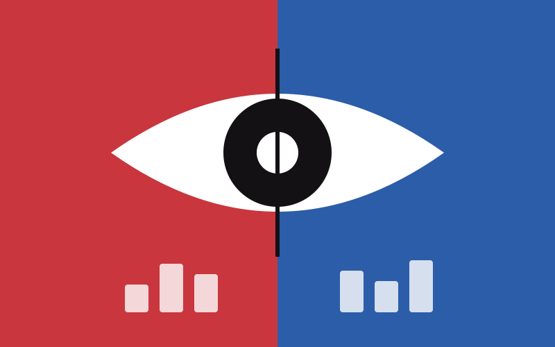
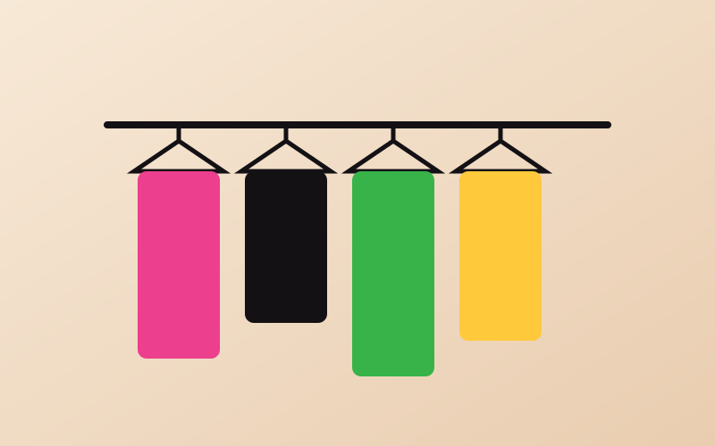
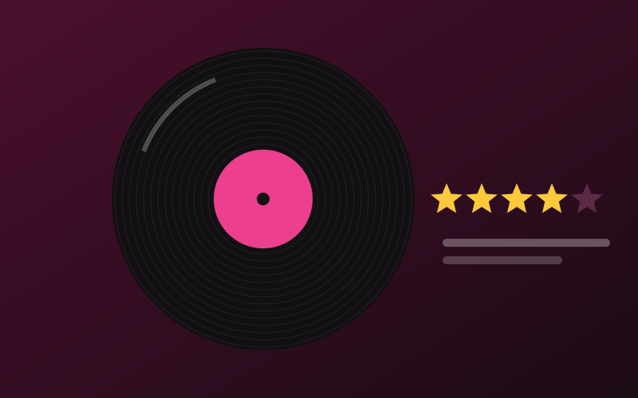
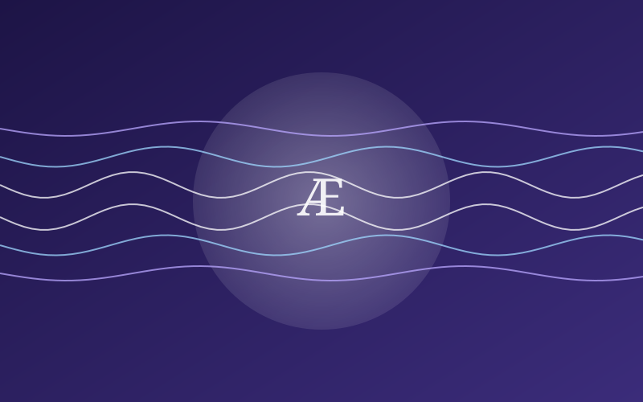
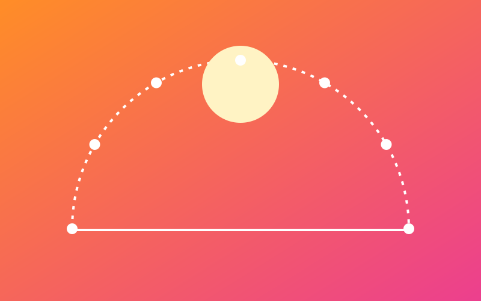

Builds
I don’t stop at the recommendation. When a question about culture is worth answering, I build the tool that answers it, with AI as a collaborator and my own hands on the production. Three case studies first, then everything in the lab, labeled for what it is.
 Invite only
Invite only
Gen Alpha Intelligence Lab
A living research lab on the forces shaping Gen Alpha culture: insights, findings, creators, and the spaces they actually occupy, with an ingest pipeline for reports, interviews, and field notes. Built with Next.js 16 and Supabase.
Meme Library
Describe the meme you half remember and it finds it. Natural-language recall across 1,000+ source-linked clips, reactions, and GIFs, each with provenance and a spread timeline showing how it travelled.
 Live
Live
Life Gamified
A fully-gamified RPG quest journal for real life. Track tasks as quests, earn XP, level up your character, unlock achievements, and build a talent tree. Because life should feel like an epic adventure. Built with React 19 and Claude Code.
The Lab
Live you can use it today · Prototype working build, not a finished product
-

KindlingCard gameA card game for people who want more of each other: four decks, heat 1 to 5, with consent built into every rule. Play it free online; the box is on pre-order. LivePlay it ↗ -

The Man and the MachineAI Music CollaborationPlay bass or connect MIDI — and the AI plays back. A real-time jam session tool with 10 AI musician personalities: from Supportive to Adversary, Listen to Free. Built with React, TypeScript, Web Audio API, and Claude Code. LiveOpen it ↗ -

DreamcatcherDream Journal · VoiceSpeak your dream the second you wake up, before it's gone. An adaptive AI interview deepens the recall, then reads it back through four lenses — Jungian, Freudian, cognitive, and cultural — and correlates it against your sleep data. LiveOpen it ↗ -

GrandmasterChess · Real-TimeA live, shared chess tournament hub. Think ESPN Tournament Challenge — but for your friend group. Live bracket tracking, Chess.com integration, auto-seeding by rating. LiveOpen it ↗ -

VeritasMedia IntelligenceAI-powered bias detection for news and media. Analyze content for perspective, compare sources, and see the full picture. PrototypeSee the code ↗ - Creator SearchCreator DiscoveryAI-powered influencer and creator discovery. Find the perfect creators for your brand based on audience, style, and engagement. PrototypeSee the code ↗
-

Digital Closet ArchiveDigital ClosetAI-powered wardrobe organizer. Catalog, style, and manage your closet with intelligent outfit recommendations. PrototypeSee the code ↗ -

JukeboxdMusic SocialLetterboxd for music. Track, rate, and review albums. Share your musical journey and discover new sounds. PrototypeSee the code ↗ -

ÆtheriaSound TherapyAI-generated binaural beats for focus, relaxation, and meditation. Custom soundscapes tailored to your mental state. PrototypeSee the code ↗ - MomentumProductivityAI-powered productivity and goal tracking. Build momentum with intelligent task management and progress insights. PrototypeSee the code ↗
-

Perfect Day CrafterLife DesignDesign your ideal day with AI. Plan routines, optimize your schedule, and build habits that align with your goals. PrototypeSee the code ↗